Food Menu
Most Popular Items
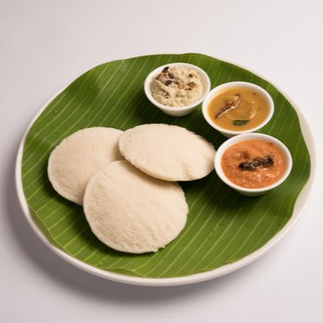
Idly(2) ₹30
Soft, steamed rice cakes made from a fermented batter of rice and urad dal.
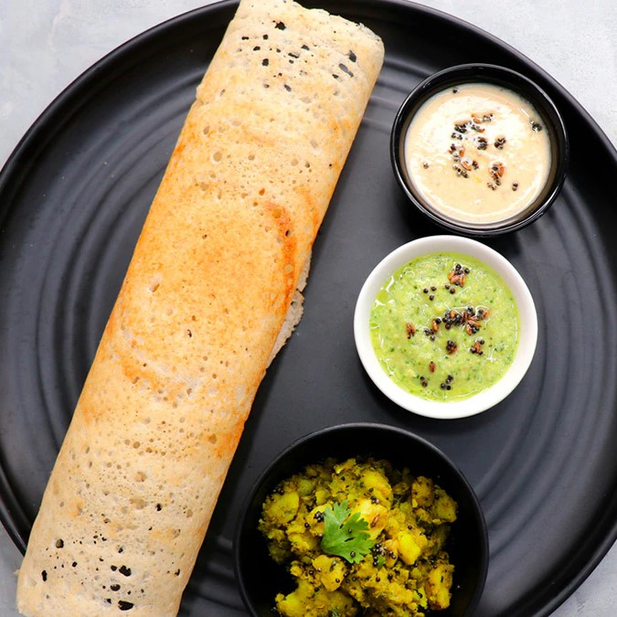
Dosa ₹40
Dosa is a thin, crispy pancake originating from South India, made from a fermented batter of rice and urad dal (black gram lentils).
Puri(2) ₹40
Puri is a light, fluffy, and crispy Indian bread made from unleavened dough. It is deep-fried and puffs up into a round, golden brown bread that is both soft and slightly crispy.Pesarattu ₹50
Pesarattu, also known as Green Gram Dosa, is a popular dish from Andhra Pradesh, a state in South India. It is a type of dosa made from green gram (mung beans) batter, which is rich in protein and fiberPongal ₹60
Pongal is a traditional South Indian dish that is often enjoyed for breakfast or as a special offering during festivals
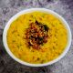
Kichidi ₹60
Kichidi is a traditional Indian dish made from a harmonious blend of rice, lentils, and spices.
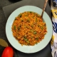
Tomato Poha ₹65
A flavorful and nutritious dish made with flattened rice (poha) cooked with ripe tomatoes, aromatic spices, and fresh herbs.
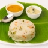
Upma ₹50
Upma is a traditional South Indian breakfast dish made from dry roasted semolina (cream of wheat) or coarse rice flour. It is cooked with vegetables, spices, and sometimes nuts to create a flavorful and hearty meal.
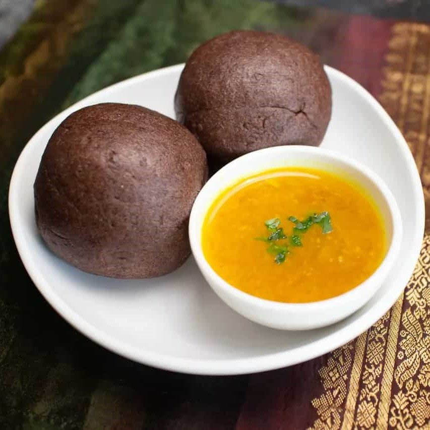
Ragi Sangati ₹50
Ragi Sangati is a nutritious and wholesome dish made from ragi flour, water, and salt. It is a staple in South Indian cuisine, particularly in the states of Karnataka, Andhra Pradesh, and Telangana. The dish has a soft and dense texture and is typically served in the form of small, round balls.
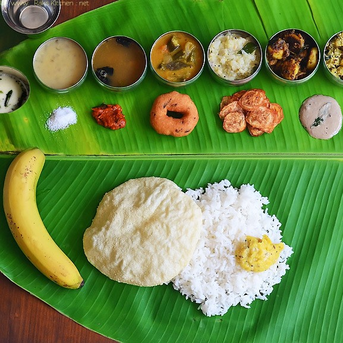
Full Meals ₹120
A full meal rice dish is a wholesome and satisfying option
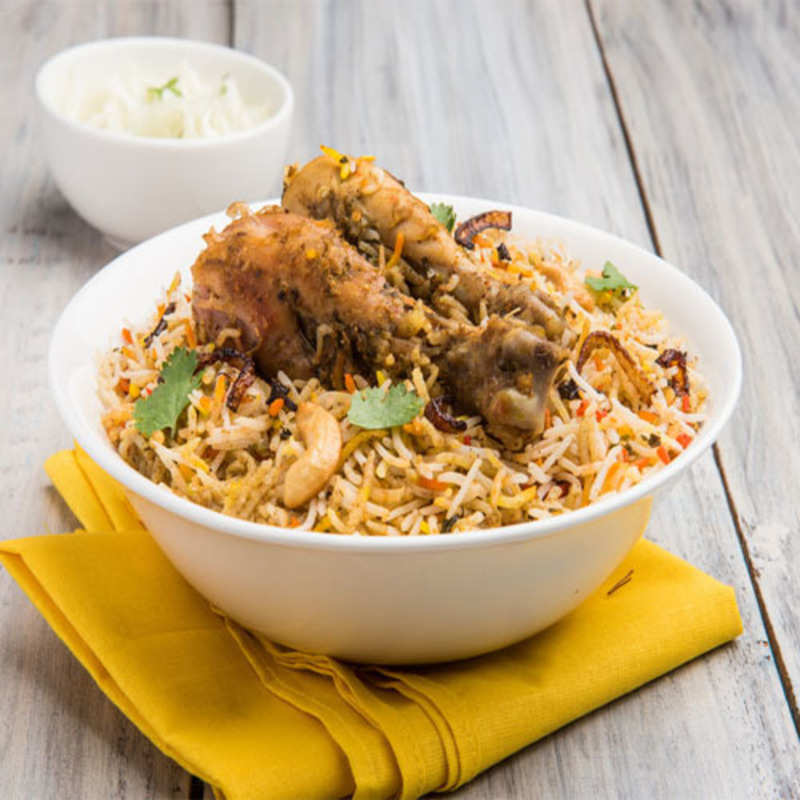
Chicken Biryani ₹150
Indulge in the exquisite flavors of our signature Chicken Biryani, a timeless classic cherished across the Indian subcontinent. Tender pieces of succulent chicken, marinated in a blend of fragrant spices, are layered with long-grain Basmati rice, creating a symphony of taste and aroma in every bite.
Chapati(2) ₹80
Chapati is a thin, unleavened flatbread made from whole wheat flour (atta). It is cooked on a griddle or tawa and puffs up when heated, resulting in a soft and slightly crispy texture.
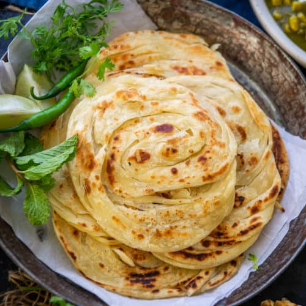
Parota(2) ₹60
Parotta is a flaky, layered flatbread made from wheat flour, salt, and oil. It is characterized by its soft, chewy texture and crispy, flaky layers.
Vegetable Pulao ₹100
This classic Indian dish is a harmonious blend of long-grain Basmati rice cooked with an assortment of fresh seasonal vegetables, perfectly seasoned with a medley of aromatic spices.
Veg. Biryani ₹120
Experience the tantalizing flavors of our Vegetable Biryani, a delightful medley of aromatic basmati rice, garden-fresh vegetables, and an exquisite blend of spices, slow-cooked to perfection.
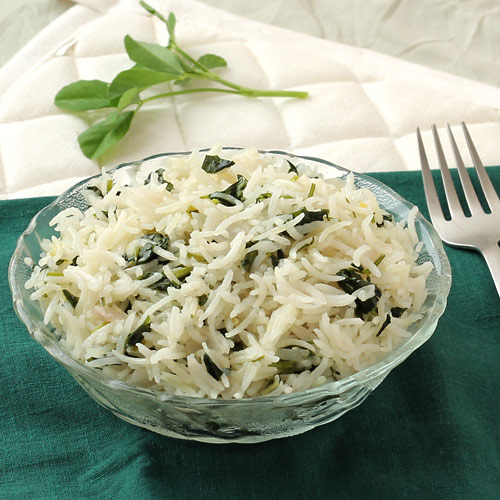
Methi Rice ₹80
Methi Rice is a fragrant and wholesome dish where long-grain Basmati rice is cooked with fresh fenugreek leaves and a blend of aromatic spices. This dish offers a delightful combination of earthy flavors from fenugreek leaves and the subtle fragrance of Basmati rice.
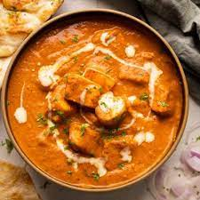
Paneer Butter Masala ₹220
Paneer Butter Masala is a popular North Indian dish known for its rich and creamy tomato-based gravy with chunks of paneer.
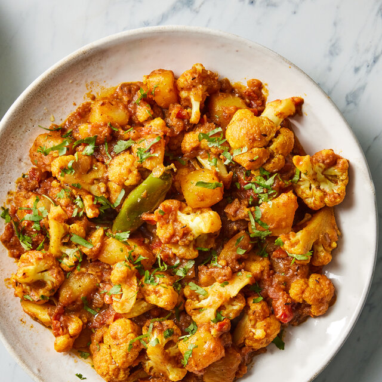
Aloo Gobi ₹80
Aloo Gobi is a classic vegetarian dish from the Indian subcontinent, known for its comforting blend of potatoes (aloo) and cauliflower (gobi) cooked with aromatic spices.
Jeera Rice ₹110
Jeera rice is a fragrant and flavorful Indian rice dish made by cooking basmati rice with cumin seeds (jeera) and other spices.
Mixed Vegetable Fried Rice ₹120
A delightful fusion of flavors and textures, our Mixed Vegetable Fried Rice is a colorful medley of aromatic basmati rice stir-fried with assorted fresh vegetables, fragrant spices, and savory sauces.
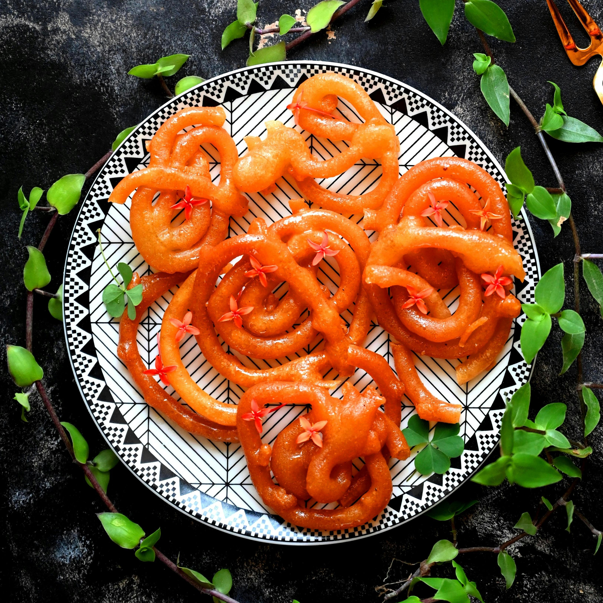
Jilebi ₹40
Jalebi is a traditional Indian sweet made from fermented batter, deep-fried to golden perfection, and soaked in a fragrant sugar syrup. Its intricate spiral shape and vibrant color make it a visually appealing treat.
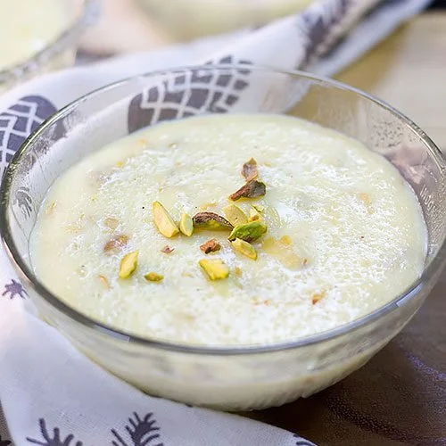
Kheer ₹60
This delicacy is made by simmering rice, vermicelli, or other grains in milk, sweetened with sugar, and flavored with cardamom, saffron, and assorted nuts.
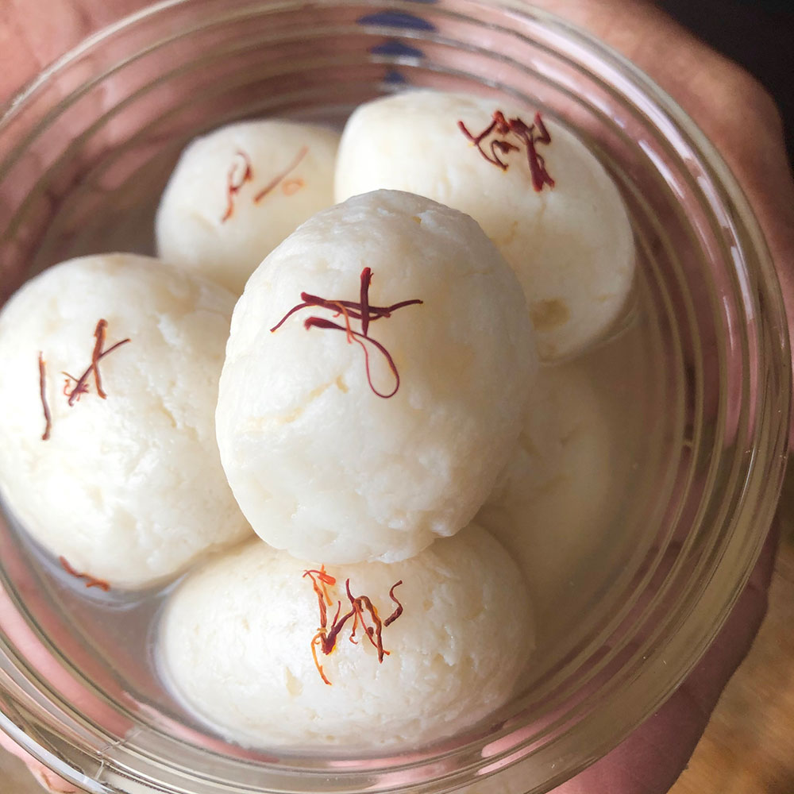
Rasgulla ₹60
These delectable treats are cherished for their melt-in-your-mouth texture and subtle sweetness.
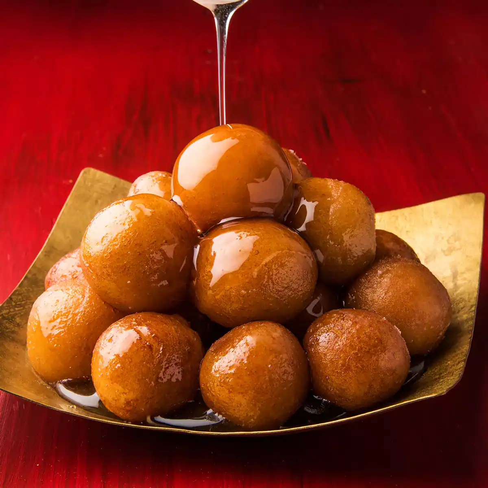